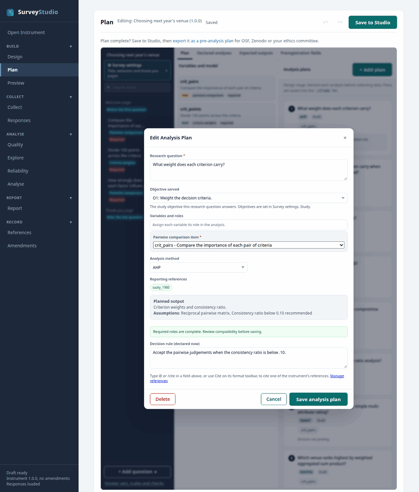
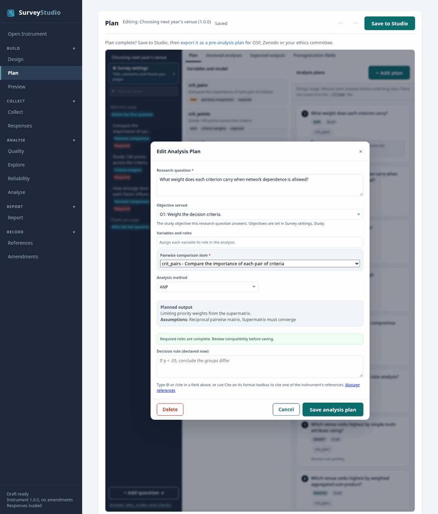
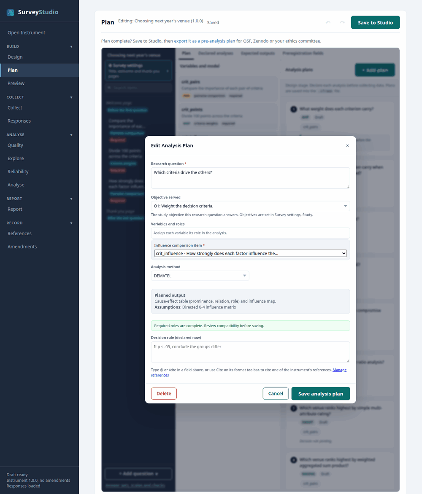
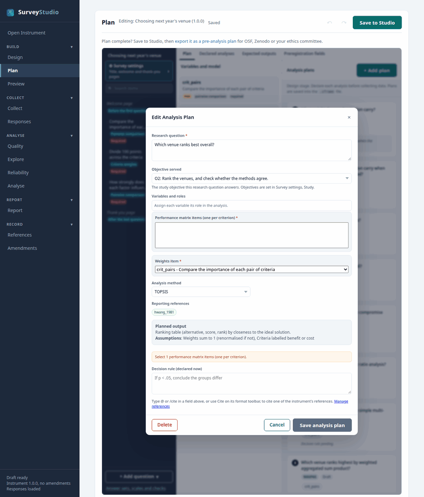
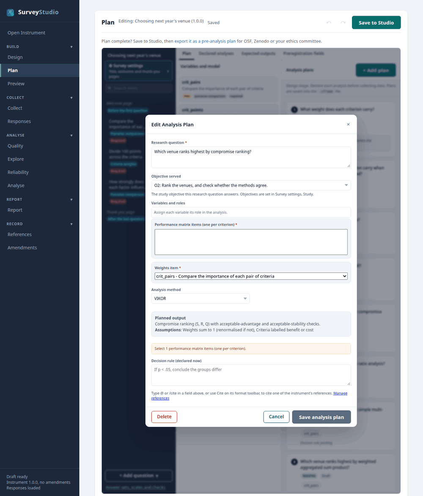

These methods weigh each criterion and rank the options.
Assumptions. Use consistent pairwise judgements, with a consistency ratio below .10, and give each option a performance score on each criterion.
In SurveyStudio, open Plan on the Design screen, add a research question and choose the method. Set the criteria weight or pairwise comparison question for the weights, and each option’s score on each criterion for the ranking. Declare the hypotheses and the decision rule before collecting responses.
Analytic hierarchy process (AHP)

mcdm_choice demo.In the pre-analysis plan:
RQ1. What weight does each criterion carry? Planned decision rule: Accept the pairwise judgements when the consistency ratio is below .10.
In the report: the APA 7 sentence and a table, with a chart where the method has one, each titled with the research question.
References: Saaty, T. L. (1980). The analytic hierarchy process. McGraw-Hill.
Analytic network process (ANP)

mcdm_choice demo.In the pre-analysis plan:
RQ2. What weight does each criterion carry when network dependence is allowed?
In the report: the APA 7 sentence and a table, with a chart where the method has one, each titled with the research question.
References: Saaty, T. L. (1996). Decision making with dependence and feedback: The analytic network process. RWS Publications.
DEMATEL

mcdm_choice demo.In the pre-analysis plan:
RQ3. Which criteria drive the others?
In the report: the APA 7 sentence and a table, with a chart where the method has one, each titled with the research question.
References: Gabus, A., & Fontela, E. (1972). World problems, an invitation to further thought within the framework of DEMATEL. Battelle Geneva Research Centre. Si, S.-L., You, X.-Y., Liu, H.-C., & Zhang, P. (2018). DEMATEL technique: A systematic review of the state-of-the-art literature on methodologies and applications. Mathematical Problems in Engineering, 2018, 3696457. https://doi.org/10.1155/2018/3696457
TOPSIS

mcdm_choice demo.In the pre-analysis plan:
RQ4. Which venue ranks best overall?
In the report: the APA 7 sentence and a table, with a chart where the method has one, each titled with the research question.
References: Hwang, C.-L., & Yoon, K. (1981). Multiple attribute decision making: Methods and applications. Springer.
VIKOR

mcdm_choice demo.In the pre-analysis plan:
RQ5. Which venue ranks highest by compromise ranking?
In the report: the APA 7 sentence and a table, with a chart where the method has one, each titled with the research question.
References: Opricovic, S., & Tzeng, G.-H. (2004). Compromise solution by MCDM methods: A comparative analysis of VIKOR and TOPSIS. European Journal of Operational Research, 156(2), 445-455. https://doi.org/10.1016/S0377-2217(03)00020-1
MOORA
mcdm_choice demo.In the pre-analysis plan:
RQ6. Which venue ranks highest by ratio analysis?
In the report: the APA 7 sentence and a table, with a chart where the method has one, each titled with the research question.
References: Brauers, W. K. M., & Zavadskas, E. K. (2006). The MOORA method and its application to privatization in a transition economy. Control and Cybernetics, 35(2), 445-469.
SMART
mcdm_choice demo.In the pre-analysis plan:
RQ7. Which venue ranks highest by simple multi-attribute rating?
In the report: the APA 7 sentence and a table, with a chart where the method has one, each titled with the research question.
References: Edwards, W. (1977). How to use multiattribute utility measurement for social decisionmaking. IEEE Transactions on Systems, Man, and Cybernetics, 7(5), 326-340. https://doi.org/10.1109/TSMC.1977.4309720
WASPAS
mcdm_choice demo.In the pre-analysis plan:
RQ8. Which venue ranks highest by weighted aggregated sum product?
In the report: the APA 7 sentence and a table, with a chart where the method has one, each titled with the research question.
References: Zavadskas, E. K., Turskis, Z., Antucheviciene, J., & Zakarevicius, A. (2012). Optimization of weighted aggregated sum product assessment. Elektronika ir Elektrotechnika, 122(6), 3-6. https://doi.org/10.5755/j01.eee.122.6.1810
PROMETHEE
mcdm_choice demo.In the pre-analysis plan:
RQ9. Which venue ranks highest by outranking flows?
In the report: the APA 7 sentence and a table, with a chart where the method has one, each titled with the research question.
References: Brans, J. P., & Vincke, P. (1985). A preference ranking organisation method: The PROMETHEE method for multiple criteria decision-making. Management Science, 31(6), 647-656. https://doi.org/10.1287/mnsc.31.6.647
ELECTRE
mcdm_choice demo.In the pre-analysis plan:
RQ10. Which venue ranks highest by outranking with thresholds?
In the report: the APA 7 sentence and a table, with a chart where the method has one, each titled with the research question.
References: Roy, B. (1968). Classement et choix en presence de points de vue multiples (la methode ELECTRE). Revue Francaise d’Informatique et de Recherche Operationnelle, 2(1), 57-75.